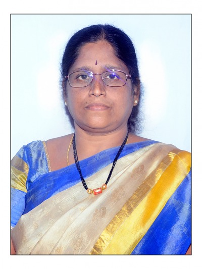

Dr. Kanumuri Suneetha
MSW,MA, PhD, UGC- NET in Social Work - PhD & Master of Social Work at S.P.M.V.V., Tirupati -Master of Arts ( population studies) -P.G. Dip in Counselling and Guidance, P G Dip IRPM and PG Dip in Ageing.
Associate Professor
Life member in Indian Society of Professional Social Work and Life member in Association of Gerontology India and M.C Member Indian Red Cross Society, Tirupati Branch
Dept of. Social Work
Dr .K. Suneetha having an experience of 15 years in teaching and 6 years in counselling working as Associate Professor . Areas of research interests are Gerontological Social Work, Women & Child Welfare and Disaster Management. Has organised many seminars, workshops and took active role in various National and International seminars, conferences and workshops. Delivered invited speeches at different events organised by Government and Non- Government Agencies associated with Department of Social Work. As been member in various committees and has also taken up consultation project works. Authoring two books got published and developed 16 lesson course work for SVU DDE MSW course.Further 50 research papers published in various Journals and books. Carried out one MRP Funded by ICSSR ,New delhi,one Minor project funded by ICSSR -SRC,Hyderabad.As part of Family couselling provided couselling services to many couples, Elderly who are victims of elder abuse and neglect.